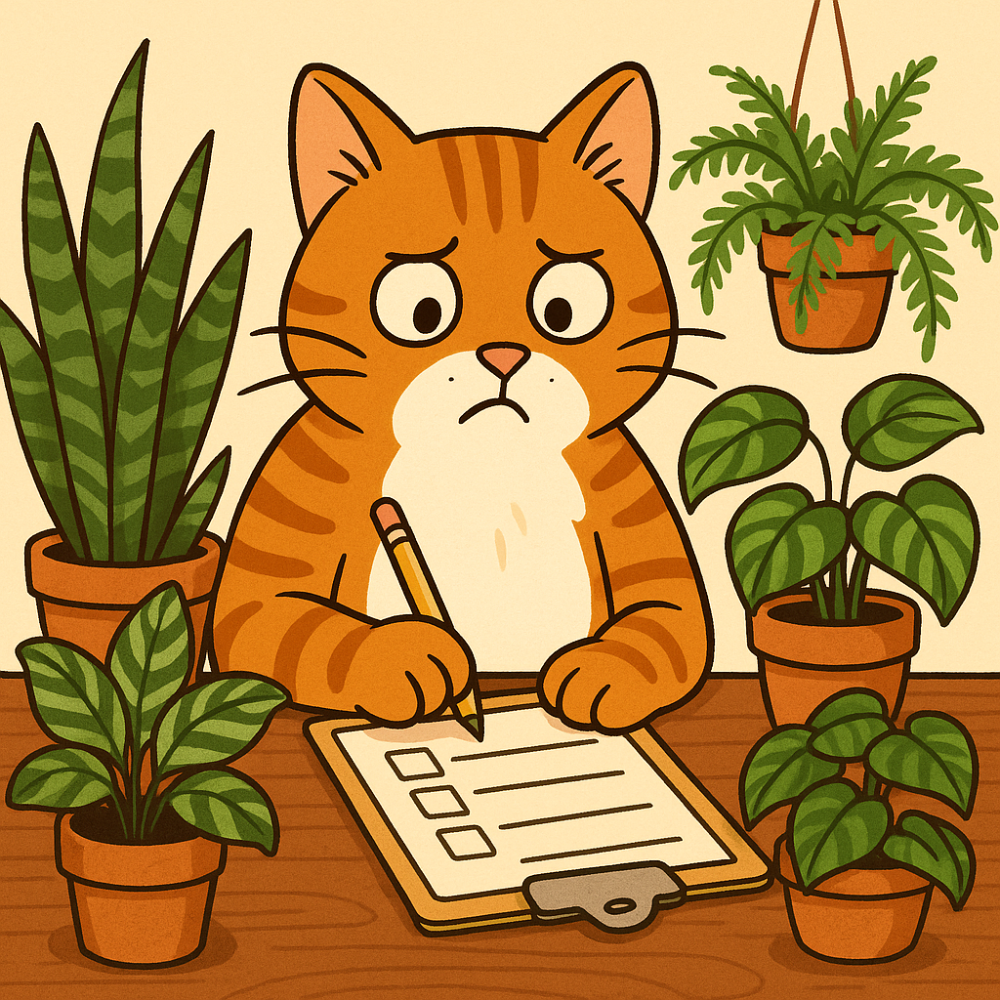

Quiz: Qual Planta Combina com a Personalidade do Seu Gato?

Se você já se perguntou qual planta mais combina com o jeito do seu gato, este quiz é para você! Responda às perguntas e descubra se seu bichano é um explorador curioso, uma diva elegante, um zen tranquilo ou um arteiro bagunceiro — e veja a planta perfeita para acompanhar essa personalidade.
← Voltar para o blog